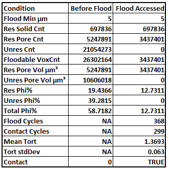
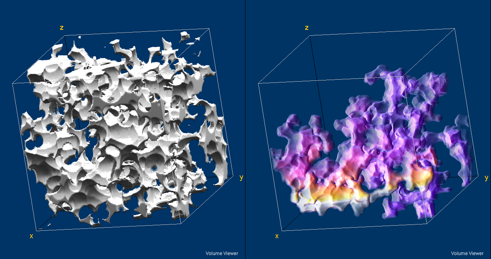
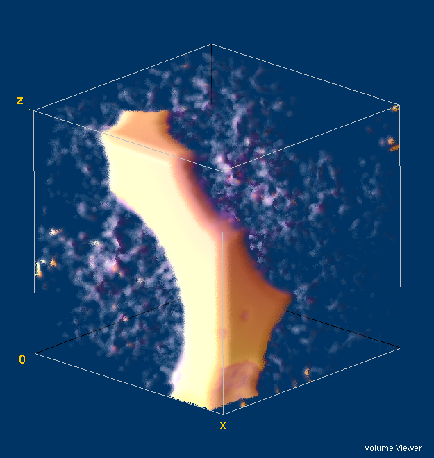

This plugin performs a 3D simulation of non-wetting imbibition in a "hybrid porosity" image.
In a porosity image, open(resolved) voxels = 1, closed(solid) voxels = 0 and everything in between 0 and 1 is unresolved porosity.
In a hybrid porosity image, each open(resolved) voxel value is replaced by its
Euclidean distance to the nearest voxel containing resolved or unresolved solid.
It is called a hybrid flooder because it combines flooding of both resolved and unresolved porosity1.
HybridFloodFill operates only on 32-Bit stacks created by the Porosity to Hybrid plugin.
HybridFloodFill uses the image's calibration units and voxels may be anisotropic.
The image voxel sizes must be greater than 1 user unit, otherwise resolved and unresolved voxel radii values will overlap.
The flood begins at the front slice flooding all pore radii greater than or equal to Flood Min. It proceeds by flooding all connected voxels until no more can be flooded.
The plugin runs in several steps
A gray flood fill is used to identify connected regions up to the flood minimum radius.
In resolved porosity, the flood non-wetting surface curvature is restored by drawing Euclidean spheres as required by the EDM values at the flood terminal surface.
The tortuosity is calculated at each point in the flooded volume image.
If the flood reaches the back slice the mean tortuosity at the back slice is calculated.
Running the plugin.
In the plugin dialog select the desired connectivity.
Edit the Flood Minimum radius. The flood maximum radius is set by the code to the largest pore radius.
The flood results are posted to a results table (not shown) but are presented below in a Excel column format.

Results before and after flooding shown side-by-side in Excel .

Synthetic Image2 Resolved Porosity(left) and Portion of Resolved porosity accessed by flood radius=6 Flood is from bottom to top in the image. Color in flooded image is accessed tortuosity ~1(blue) to ~4(white)

Rendering of 50x50x50um region at top of an R=0.58um flood image. Flood has begun to access the unresolved porosity.
At this writing, the validity of using porosity as a proxy for invading non-wetting fluid surface radius is not well established. See the DistanceMapLib comments.
The synthetic image was prepared by drawing random Euclidean spheres to 0.2 volume fraction on a Gaussian distribution of porosity 0.2<φ<0.8.